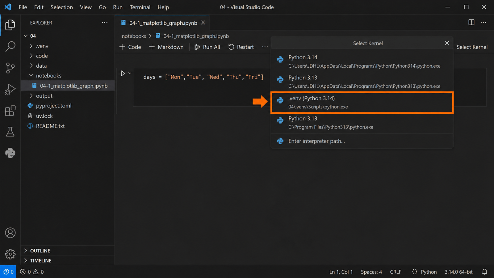
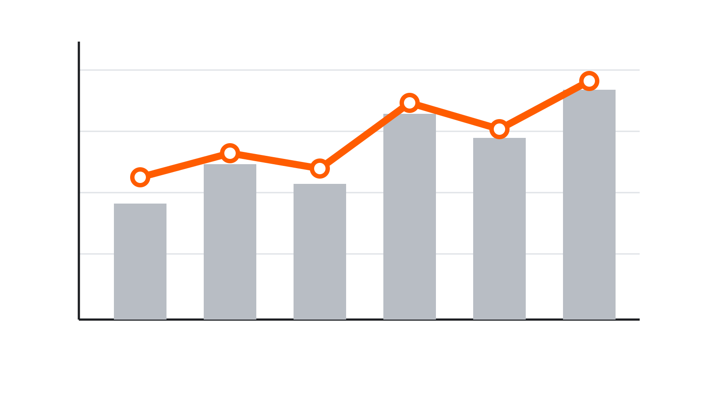
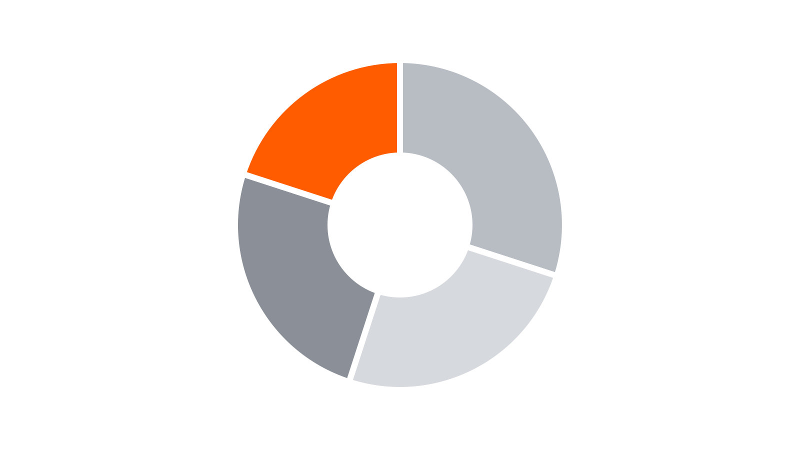
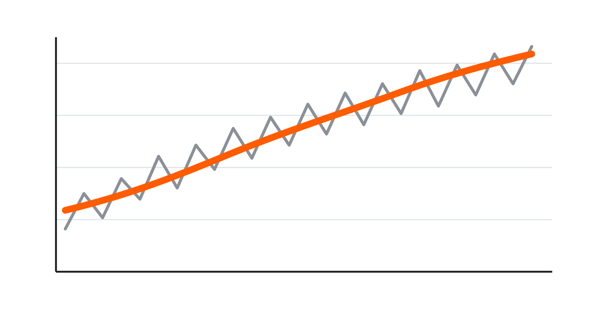
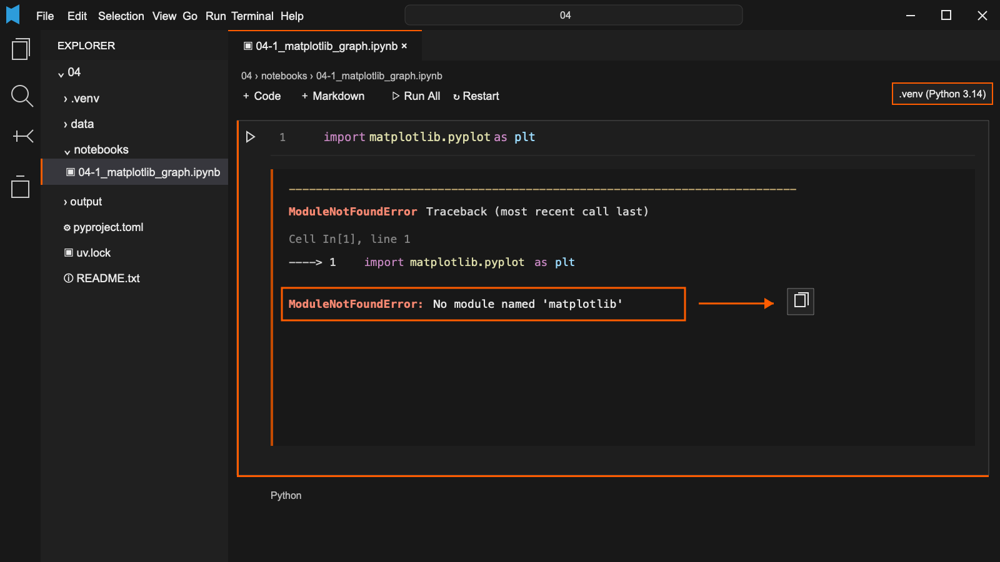

Matplotlib으로 그래프 이해하기 用 Matplotlib 理解图表
이번 차시 폴더를 받아 연다下载并打开本课时的文件夹 실습实操
3주차에 03 폴더를 만들었듯이, 이번에는 04 폴더를 씁니다. 아래 버튼으로 받습니다.和第 3 次课创建 03 文件夹时一样，这次我们使用 04 文件夹。点击下面的按钮下载。
04 폴더가 나옵니다. JDH_VibeCoding_자기이름 안에 넣습니다.解压后会看到 04 文件夹。请把它放进以自己姓名命名的 JDH_VibeCoding_姓名 文件夹中。- 압축을 풀어 나온
04폴더를JDH_VibeCoding_자기이름안에 넣는다.把解压后的04文件夹放进JDH_VibeCoding_姓名文件夹中。 - 그
04폴더를 통째로 VS Code로 연다. 파일 하나만 열지 않는다.用 VS Code 打开整个04文件夹，不要只打开其中一个文件。 - 터미널에
uv sync를 실행한다..venv가 생긴다.在终端运行uv sync，系统会创建.venv。 - Notebook을 열고 오른쪽 위에서 이 폴더의
.venv를 커널로 고른다.打开 Notebook，在右上角选择这个文件夹中的.venv作为内核。
이 폴더의 .venv를 커널로 고른다选择当前文件夹中的 .venv 作为内核 실습实操
uv sync가 끝나면 Notebook을 열고, 오른쪽 위의 커널 이름을 누릅니다. 경로에 04와 .venv가 함께 보이는 항목을 고릅니다.uv sync 完成后打开 Notebook，点击右上角的内核名称。选择路径中同时出现 04 和 .venv 的项目。

04와 .venv가 함께 보이는 항목을 고른다.图 4-1-1. 选择路径中同时出现 04 和 .venv 的项目。여기까지는 3주차에 한 것과 똑같습니다. 폴더 이름만 03에서 04로 바뀌었습니다. 커널 목록에 .venv가 안 보이면 교과서 03-1의 17쪽을 봅니다.到这里和第 3 次课完全一样，只是文件夹名从 03 换成了 04。如果内核列表里看不到 .venv，请查看教材 03-1 的第 17 页。
그래도 Notebook이 안 열리면 code 폴더의 파일을 대신 실행합니다. 배우는 것은 똑같고, 그래프가 별도 창으로 뜨는 것만 다릅니다.如果 Notebook 还是打不开，可以改为运行 code 文件夹里的文件。学习内容不变，只是图表会显示在单独的窗口中。
두 가지 방법으로 본다用两种方式来看 핵심核心
아래 표와 그래프는 같은 자료입니다. 담긴 숫자가 하나도 다르지 않습니다.下面的表格和图表是同一份资料，数字完全相同。
| 요일星期 | 이용 인원使用人数 |
|---|---|
| Mon | 18 |
| Tue | 25 |
| Wed | 21 |
| Thu | 32 |
| Fri | 29 |

표에서는 목요일 이용 인원이 32명이라는 값을 정확히 찾을 수 있습니다. 그래프에서는 목요일 막대가 가장 높다는 사실이 먼저 눈에 들어옵니다. 같은 자료라도 정확한 값을 찾을 때와 전체 모습을 비교할 때 알맞은 표현 방법이 다릅니다.在表格中，可以准确找到星期四有 32 人使用；在图表中，最先看到的是星期四的柱子最高。同一份数据，在查找准确数值和比较整体差异时，适合的表达方式并不相同。
보여 주려는 것에 따라 그래프의 모양이 달라진다想呈现的内容不同，图表的样子也不同 핵심核心
종류를 외우기보다 각 그래프가 무엇을 눈에 띄게 하는지 살펴봅니다.不用背诵种类，先观察每种图表突出显示什么。

막대 + 꺾은선
양과 변화를 함께 보기柱形图 + 折线图
同时观察数量和变化

원형 그래프
전체에서 차지하는 비율 보기饼图
观察各部分所占比例

추세선
들쭉날쭉한 값 속 전체 흐름 보기趋势线
从波动数值中观察整体走势
4-1에서는 기본 선그래프를 만들고, 4-2 마지막에는 같은 자료 위에 5일 평균 추세선을 추가합니다.4-1 制作基本折线图，4-2 最后会在同一数据上添加5 日平均趋势线。
Python 버전과 라이브러리 목록을 함께 읽는다一起读取 Python 版本和库清单 실습实操
이제 컴퓨터로 그래프를 그려 보겠습니다. Python이 그래프를 그리려면 matplotlib이라는 라이브러리가 필요합니다. 바로 실행하기 전에, 이 프로젝트에 필요한 라이브러리가 이미 준비되어 있는지 pyproject.toml에서 먼저 확인합니다. 왼쪽 탐색기에서 파일을 엽니다.现在我们要用电脑绘制图表。Python 需要使用名为 matplotlib 的库来绘图。在运行之前，先打开左侧资源管理器中的 pyproject.toml，确认这个项目是否已经准备好所需的库。
[project]
requires-python = ">=3.11"
dependencies = [
"ipykernel>=6.29",
"openpyxl>=3.1",
]| 보이는 것看到的内容 | 뜻意思 |
|---|---|
requires-python | 사용할 Python의 범위 · >=3.11은 3.11 이상可使用的 Python 版本范围；>=3.11 表示 3.11 或更高版本 |
dependencies | 이 프로젝트에 필요한 라이브러리 목록这个项目需要的库清单 |
ipykernel | Notebook 코드를 실행하게 해 주는 도구让 Notebook 可以运行代码的工具 |
openpyxl | Excel 파일을 읽게 해 주는 도구用来读取 Excel 文件的工具 |
matplotlib | 아직 목록에 없다现在还不在清单里 |
uv sync는 pyproject.toml에서 Python 범위와 필요한 라이브러리를 읽고, uv.lock에 기록된 정확한 버전을 확인합니다. 그런 다음 .venv를 만들거나 현재 조건에 맞게 고칩니다.uv sync 会先从 pyproject.toml 读取 Python 版本范围和所需的库，再查看 uv.lock 中记录的准确版本。然后，它会创建 .venv，或把现有环境调整到符合项目条件。
라이브러리는 이미 만들어진 기능의 묶음이다库是已经做好的功能的集合 핵심核心
라이브러리는 다른 사람이 만들어 둔 여러 기능을 한데 모아, 내 코드에서 꺼내 쓸 수 있게 한 묶음입니다. matplotlib에는 표의 숫자를 그래프로 그리는 기능이 들어 있습니다.库把别人已经做好的多种功能集中在一起，让我们可以在自己的代码中直接调用。matplotlib 中包含把表格数字画成图表的功能。

그림의 시판 소스와 면처럼, 라이브러리에는 다른 사람이 미리 만들어 둔 기능이 들어 있습니다. 우리는 재료부터 모두 만들지 않고 필요한 것을 골라 사용합니다. 여기에 내가 가진 데이터와 원하는 표현 방법을 더해 새로운 결과를 만듭니다.就像图中的现成酱料和面条一样，库中装着别人已经制作好的功能。我们不必从原材料开始全部重做，只需选出需要的功能，再加入自己的数据和想要的表现方式，就能得到新的结果。
프로젝트에 없는 라이브러리를 쓰면 오류가 난다使用项目中尚未安装的库时会报错 실습实操
04-1_matplotlib_graph.ipynb의 첫 번째 셀을 실행해 봅니다. Python은 matplotlib을 사용하라는 코드를 만났지만, 현재 04 프로젝트에서는 이 라이브러리를 찾을 수 없습니다. 따라서 아래 오류가 나오는 것이 정상입니다.运行 04-1_matplotlib_graph.ipynb 的第一个单元格。Python 读到要使用 matplotlib 的代码，但当前的 04 项目还找不到这个库，因此出现下面的错误是正常的。
import matplotlib.pyplot as plt
ModuleNotFoundError: No module named 'matplotlib'

오류를 두 번으로 나누어 전달한다把错误分成两次发给 AI 실습实操
먼저 코드와 오류 메시지를 그대로 전달해 문제를 묻습니다. 답을 읽은 뒤에 필요한 조치를 해 달라고 이어서 요청합니다.先原样发送代码和错误信息，询问问题所在。读完回答后，再请 AI 完成需要的处理。
- 오류가 난 코드와 오류 마지막 줄을 함께 복사한다.把出错的代码和报错的最后一行一起复制下来。
- 첫 번째로 무엇이 문제인지 묻는다.第一次先问问题出在哪里。
- AI의 답을 읽은 뒤, 두 번째로 필요한 조치를 해 달라고 요청한다.看完 AI 的回答后，第二次请它完成需要的处理。
아래 셀을 실행했더니 이런 오류가 떴어. 무엇이 문제인지 설명해 줘. import matplotlib.pyplot as plt ModuleNotFoundError: No module named 'matplotlib'
运行下面的单元格后出现了这个错误。 请告诉我问题出在哪里。 import matplotlib.pyplot as plt ModuleNotFoundError: No module named 'matplotlib'
이 문제를 해결하는 데 필요한 조치를 해 줘.
请帮我完成解决这个问题 所需的处理。
우리가 원인을 맞히는 것이 목표가 아닙니다. AI가 판단할 수 있게 오류를 빠짐없이 전달하는 연습입니다. AI가 작업을 마치면 다음 쪽에서 실제로 무엇이 바뀌었는지 확인합니다.这里不是让我们自己猜出原因，而是练习完整、准确地把错误信息发给 AI。AI 完成操作后，我们会在下一页查看文件实际发生了什么变化。
AI의 작업 내용과 실제 파일을 비교한다对照 AI 的操作说明和实际文件 실습实操
AI가 문제를 해결했다면 보통 matplotlib을 프로젝트에 추가하고, .venv에서도 사용할 수 있게 준비했다고 답합니다. 그러나 AI의 답만 보고 끝내지 않습니다. pyproject.toml을 다시 열어 실제 파일에 같은 변화가 생겼는지 확인합니다.AI 解决问题后，通常会回答说已把 matplotlib 加入项目，并让 .venv 可以使用它。但不能只看 AI 的回答就结束。请重新打开 pyproject.toml，确认实际文件中也出现了相同的变化。
dependencies = [
"ipykernel>=6.29",
"openpyxl>=3.1",
]matplotlib 추가 뒤添加 matplotlib 后dependencies = [
"ipykernel>=6.29",
"matplotlib>=...",
"openpyxl>=3.1",
]matplotlib 줄이 새로 생겼으면 AI가 필요한 라이브러리를 프로젝트에 추가한 것입니다. 뒤의 버전 번호는 컴퓨터와 날짜에 따라 달라도 됩니다.出现新的 matplotlib 行，就说明 AI 已把所需库加入项目。后面的版本号可能因电脑和日期而不同。
커널을 다시 시작하고 같은 셀을 실행한다重启内核后再次运行同一单元格 실습实操
새 라이브러리를 추가해도 이미 실행 중인 Notebook이 곧바로 알아차리지 못할 수 있습니다. 그래서 커널을 한 번 다시 시작한 뒤, 오류가 났던 셀부터 다시 실행합니다.添加新的库后，正在运行的 Notebook 可能不会立刻识别它。因此要先重启一次内核，再从刚才报错的单元格开始重新运行。
pyproject.toml에matplotlib줄이 생겼는지 본다.确认pyproject.toml中出现了matplotlib行。- Notebook 위쪽의 다시 시작을 누른다.点击 Notebook 上方的重启。
- 아까 멈췄던 셀과 아래 그리기 셀을 다시 실행한다.重新运行刚才停止的单元格和下面的绘图单元格。
import matplotlib.pyplot as plt
plt.figure(figsize=(8, 4.5))
bars = plt.bar(days, visitors, color="#72757d")
plt.ylim(0, 36)
plt.title("Visitors by Day")
plt.xlabel("Day")
plt.ylabel("Visitors")
plt.bar_label(bars)
plt.tight_layout()
plt.show()그래프 안의 글자는 영문으로 씁니다. 학교 컴퓨터의 그리기 도구에는 한글 글꼴이 들어 있지 않아, 한글로 쓰면 네모(□□□)로 나옵니다. 한글 설명은 그래프 밖에 적습니다.图表里的文字用英文。学校电脑的绘图工具没有内置韩文字体，写韩文会显示成方块（□□□）。韩文说明写在图表外面。
코드 바로 아래에 그래프가 나온다图表出现在代码正下方 실습实操
커널을 다시 시작하고 같은 셀을 실행하면 이번에는 오류 없이 그래프가 나타납니다. 3-1에서 글자 결과가 코드 아래에 나왔던 것처럼, 그림으로 만든 결과도 코드 바로 아래에 붙습니다.重启内核并再次运行同一个单元格后，这次图表会正常出现。和 3-1 中的文字结果一样，绘制出的图表也会显示在代码正下方。

이제 긴 자료로 직접 그린다现在用较长的数据亲自绘图 실습实操
지금까지는 다섯 개 값으로 방법을 익혔습니다. 이제 60줄짜리 Excel 자료를 사용합니다.刚才用五个数值熟悉了方法。现在使用有 60 行的 Excel 数据。
| 열 파일要打开的文件 | 하는 일要做的事 |
|---|---|
data/04-library-data.xlsx | Excel에서 원본과 머리글을 확인한다在 Excel 中确认原始数据和表头 |
notebooks/04-1_exercise.ipynb | AI가 만든 그래프 코드를 실행한다运行 AI 编写的绘图代码 |
VS Code에서는 Excel 파일을 표로 열어 볼 수 없습니다. Windows 파일 탐색기에서 04 → data 폴더로 들어가 04-library-data.xlsx를 두 번 눌러 Excel로 엽니다. Notebook만 VS Code에서 엽니다.VS Code 不能把 Excel 文件作为表格打开。请在 Windows 文件资源管理器中进入 04 → data 文件夹，双击 04-library-data.xlsx 用 Excel 打开。Notebook 仍在 VS Code 中打开。
AI에게 자료를 맡기기 전에 학생도 원본을 먼저 봐야 합니다. 그래야 AI가 머리글이나 줄 수를 잘못 읽었을 때 알아차릴 수 있습니다. Excel과 Notebook을 나란히 열어 두고, 한쪽에서는 원본을 보고 다른 쪽에서는 AI가 만든 결과를 확인합니다.在把数据交给 AI 之前，我们也要先查看原始数据。这样，AI 读错表头或数据行数时才能发现。请把 Excel 和 Notebook 并排打开，一边查看原始数据，一边检查 AI 生成的结果。
첫 줄이 각 열의 뜻을 알려 준다第一行说明每一列的含义 실습实操
Excel 파일을 열고 첫 줄만 먼저 읽습니다. 첫 줄의 이름을 머리글(header)이라고 합니다.打开 Excel 文件，先读第一行。第一行的名称叫作表头（header）。
date | visitors | borrowed_books |
|---|---|---|
| 2026-03-02 | 24 | 8 |
| 2026-03-03 | 27 | 9 |
| 2026-03-04 | 26 | 10 |
- 첫 줄에 머리글 세 개가 있는지 본다.确认第一行有三个表头。
- 첫째 줄은 머리글입니다. 실제 데이터는 Excel의 2행에서 시작해 61행에서 끝나며, 모두 60줄입니다. 마지막 행 번호가 61이어도 데이터는 60줄이라는 점에 주의한다.第 1 行是表头，实际数据从 Excel 的第 2 行开始，到第 61 行结束，共 60 行。即使最后显示的行号是 61，数据仍然只有 60 行。
- 파일은 고치지 않고 그대로 둔다.不要修改文件，保持原样。
세 열에서 어떤 흐름을 찾을까从三列中寻找什么变化 핵심核心
이 자료에는 12주 동안의 평일 기록이 있습니다. date는 기록의 순서를 알려 주고, visitors와 borrowed_books는 날짜마다 달라지는 값을 담고 있습니다. 날짜를 가로축에 놓고 두 값 가운데 하나를 세로축에 놓으면 시간에 따른 변화를 볼 수 있습니다. 어느 값을 고를지는 아직 정하지 않고, 다음 쪽에서 AI의 추천과 이유를 들어 봅니다.这份资料记录了 12 周的工作日。date 表示记录的先后顺序，visitors 和 borrowed_books 则是每天变化的数值。把日期放在横轴，把其中一个数值放在纵轴，就能观察它随时间的变化。这里先不决定使用哪一列，下一页再听听 AI 的推荐和理由。
| 열列 | 담긴 내용内容 | 물어볼 수 있는 것可以提出的问题 |
|---|---|---|
date | 평일 날짜工作日日期 | 언제의 기록인가记录的是哪一天 |
visitors | 도서관 방문자 수图书馆访客人数 | 시간이 지나며 어떻게 달라졌나随时间怎样变化 |
borrowed_books | 대출한 책 수借出图书数量 | 반복해서 많은 요일이 있나是否有反复较多的星期 |
그래프를 먼저 정하지 않습니다. 다음 쪽에서 AI에게 자료의 의미와 알맞은 표현 방법을 차례로 묻습니다.先不要决定图表。下一页依次询问 AI 数据的含义和合适的表达方式。
AI에게 세 번으로 나누어 요청한다分三次向 AI 提出请求 실습实操
그래프를 한번에 만들어 달라고 하지 않습니다. AI의 답을 한 번씩 확인하며 다음 요청으로 넘어갑니다.不要一次就让 AI 完成全部图表。每次先确认 AI 的回答，再继续下一次请求。
data/04-library-data.xlsx를 읽어 줘. 머리글과 데이터 줄 수를 확인하고, 각 열이 무엇을 뜻하는 자료인지 설명해 줘.
请读取 data/04-library-data.xlsx。 请确认表头和数据行数， 并说明每一列表示什么。
이 데이터의 시간에 따른 변화를 잘 표현하려면 어떤 그래프가 알맞은지 한 가지 추천해 줘. 어떤 열을 사용할지와 추천 이유도 설명해 줘.
如果想清楚地表现这份数据随时间的变化， 请推荐一种合适的图表。 请说明要使用哪些列，以及推荐的理由。
추천한 그래프를 notebooks/04-1_exercise.ipynb에 만들어 줘. Excel은 pandas가 아니라 openpyxl로 읽어 줘. 데이터 총 행 수와 열 이름도 print()로 먼저 표시해 줘. 60줄을 모두 사용하고, 제목과 축 이름은 영문으로 써 줘. 날짜가 겹치지 않게 일부 눈금만 표시해 줘.
请把推荐的图表做到 notebooks/04-1_exercise.ipynb 中。 请使用 openpyxl 而不是 pandas 读取 Excel。 先用 print() 显示数据总行数和列名。 请使用全部 60 行数据，标题和坐标轴名称用英文。 只显示部分日期刻度，避免文字重叠。
1번 답에서는 머리글과 데이터 줄 수를 Excel 원본과 비교합니다. 두 값이 맞으면 2번 요청으로 넘어가 추천한 그래프와 사용할 열, 그 이유를 읽습니다. 추천이 자료의 내용과 맞는지 확인한 뒤에만 3번 요청을 보내 Notebook에 그래프를 만들게 합니다.在第 1 次回答中，把表头和数据行数与 Excel 原始数据进行比较。确认无误后，再发送第 2 次请求，阅读 AI 推荐的图表、要使用的列和推荐理由。确认推荐符合数据内容后，最后发送第 3 次请求，让 AI 在 Notebook 中制作图表。
AI가 작업을 마쳤다고 답하면 대화창에서 멈추지 않고, 다음 쪽의 순서대로 실제 Notebook을 열어 실행합니다.AI 回复操作完成后，不要停在对话窗口，按下一页的顺序打开实际 Notebook 并运行。
AI가 채운 셀을 직접 실행한다自己运行 AI 填写的单元格 실습实操
AI가 작업을 마쳤다고 답했습니다. 이제 AI의 설명만 읽고 끝내지 않고, VS Code에서 notebooks/04-1_exercise.ipynb를 직접 엽니다. AI에게 수정해 달라고 한 파일이 맞는지 확인한 뒤, 코드 셀을 위에서 아래로 실행합니다. AI가 다른 파일도 수정했다고 말하면 바로 실행하지 말고, 왜 수정했는지 먼저 묻습니다.AI 已回复操作完成。现在不要只看说明就结束，请在 VS Code 中打开 notebooks/04-1_exercise.ipynb。先确认这是请 AI 修改的文件，再从上到下运行代码单元格。如果 AI 说还修改了其他文件，先问清原因，不要马上运行。
- 오른쪽 위 커널이
.venv (Python 3.14)인지 확인한다.确认右上角的内核是.venv (Python 3.14)。 - AI가 채운 코드 셀을 위에서 아래로 읽어 본다.从上到下读一遍 AI 填写的代码单元格。
- 실행 버튼을 눌러 코드 바로 아래에 그래프를 띄운다.点击运行按钮，让图表显示在代码正下方。
- 오류가 나면 오류가 난 셀과 마지막 줄을 함께 복사해 같은 AI 대화에 보낸다.如果出错，把出错的单元格和报错的最后一行一起发到同一个 AI 对话中。
Excel과 함께 결과를 검토한다对照 Excel 检查结果 실습实操
그래프가 그럴듯해 보여도 원본과 맞지 않을 수 있습니다. 먼저 코드 아래에 출력된 데이터 줄 수와 열 이름을 확인합니다. 그다음 Excel의 첫 번째 데이터 행과 비교하고, 마지막으로 그래프의 두 축이 AI가 추천한 열을 사용했는지 살펴봅니다.图表看起来合理，也可能与原始数据不符。先确认代码下方输出的数据行数和列名，再与 Excel 的第一条数据比较，最后检查图表的两个坐标轴是否使用了 AI 推荐的列。
| 확인할 것检查项目 | 기대 결과预期结果 |
|---|---|
| 데이터 총 행 수数据总行数 | 60 |
| 열 이름列名 | date · visitors · borrowed_books |
| 첫 번째 데이터 행 (Excel 2행)第一条数据 （Excel 第 2 行） | 2026-03-02 · 24 · 8 |
| 그래프에 사용한 열图表使用的列 | 2번에서 추천한 열과 같음与第 2 次推荐的列一致 |
| 날짜 표시日期标签 | 겹치지 않음没有重叠 |
하나라도 다르면 그래프를 손으로 고치지 않습니다. 어긋난 항목을 AI에게 말하고 코드를 고치게 합니다.如果有任何一项不符，不要直接手动改图。请把不一致的项目告诉 AI，让它修改代码。
결과가 맞는지 검토하며 마무리한다确认结果是否正确，完成本课
오늘의 목표는 그래프 하나를 띄우는 데서 끝나지 않습니다. 자료의 뜻을 먼저 읽고, 필요한 작업을 AI에게 나누어 요청하고, AI가 만든 결과를 원본과 비교했습니다. 이 과정을 거쳐야 그래프를 믿고 사용할 수 있습니다.今天的目标不只是让一个图表显示出来。我们先读懂数据的含义，再把任务分成几步交给 AI，最后把 AI 生成的结果与原始数据进行比较。完成这些检查后，图表才值得相信和使用。
pyproject.toml에서 Python 범위와 라이브러리 목록을 확인했다.在pyproject.toml中确认了 Python 范围和库清单。uv sync가 설정 파일을 바탕으로.venv를 맞추는 과정을 확인했다.确认了uv sync会根据配置文件同步.venv。- 오류의 원인을 먼저 묻고 필요한 조치를 AI에게 요청했다.先询问错误原因，再请 AI 采取必要措施。
- 데이터를 읽고 그래프를 추천받은 뒤, 총 행 수와 열 이름까지 출력해 원본과 대조했다.读取数据并获得图表推荐后，输出总行数和列名，与原始数据对照。
같은 자료의 CSV 파일을 pandas로 읽습니다. 긴 표를 코드 안에 옮겨 적지 않고 파일에서 바로 불러오는 방법을 익힙니다.下一课时用 pandas 读取同一份数据的 CSV 文件，学习不把长表抄进代码，而是直接从文件加载。